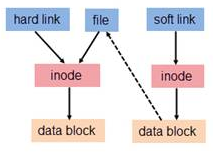

静态库
静态库（.a）：程序在编译链接的时候把库的代码链接到可执行文件中。程序运行的时候将不再需要静态库，所以会导致可执行文件的代码量增多。但生成可执行文件之后不再依赖静态库。所以速度会较快
1 | # 生成静态库 |
动态库
动态库（.so）：程序在运行的时候才去链接动态库的代码，多个程序共享使用库的代码。动态库链接的可执行文件仅仅包含它用到的函数入口地址的一个表，而不是外部函数所在目标文件的整个机器码，在可执行文件开始运行以前，外部函数的机器码由操作系统从磁盘上的该动态库中复制到内存中，动态库可以在多个程序间共享，所以动态链接使得可执行文件更小，节省了磁盘空间。操作系统采用虚拟内存机制允许物理内存中的一份动态库被要用到该库的所有进程共用，节省了内存和磁盘空间，但是，每次使用时，都要去调用动态库，所以速度会相对较慢
1 | # 生成动态库 |
使用库
$ gcc main.c -I ./include -L. -lmylib
-L: 指定库路径（默认是从usr/lib 或 usr/local/lib中寻找库文件）
-l: 指定库名（去掉lib以及版本号）
-I: 指定头文件搜索路径
可以将路径添加到环境变量LIBRARY_PATH中代替-L
运行动态库：由于动态链接在运行时需要动态库，所以要么拷贝.so文件到系统共享库路径下；要么添加路径到环境变量LD_LIBRARY_PATH中；或者在目录/etc/ld.so.conf.d/中创建mylib.conf，并且在其中填写存放动态库的路径，保存退出后，使用ldconfig命令更新/ld.so.conf.d目录
gcc默认动态链接，如果想使用第三方静态库，不能使用-static选项，因为-static选项是生成静态链接可执行程序，所有库都使用静态库，我们只希望这个第三方库使用静态库而不是所有，因此我们将第三方库拷贝到指定目录下然后使用-L选项指定路径，链接的就是静态库
硬链接
创建方式 ln srcfile destfile
1 | $ touch tmp |
我们发现两个文件的inode相同，而链接数从1变成了2
删除文件时干了两件事情：1.在目录中将对应的记录删除 2.将硬连接数-1，如果为0，则将对应
的磁盘释放
软链接
创建方式 ln -s srcfile destfile
1 | $ touch tmp |
我们发现两个文件的inode不相同，而tmp.soft的文件大小为被链接文件所给路径的长度
链接的访问

硬链接hard link本质上和file没区别，与源文件file共用一个inode节点，通过inode来访问数据，而软链接soft link本质上是一个独立的文件，有自己的inode节点和自己的data block其中保存着file的路径，通过路径访问源文件
所以删除源文件，软链接文件失效；硬链接只是链接数-1，删除了目录文件data block中保存的目录项。由于软链接通过路径访问，硬链接通过inode访问，所以软链接可以跨分区，而硬链接不可跨分区，目录本身也是跨分区的所以不能设置硬链接